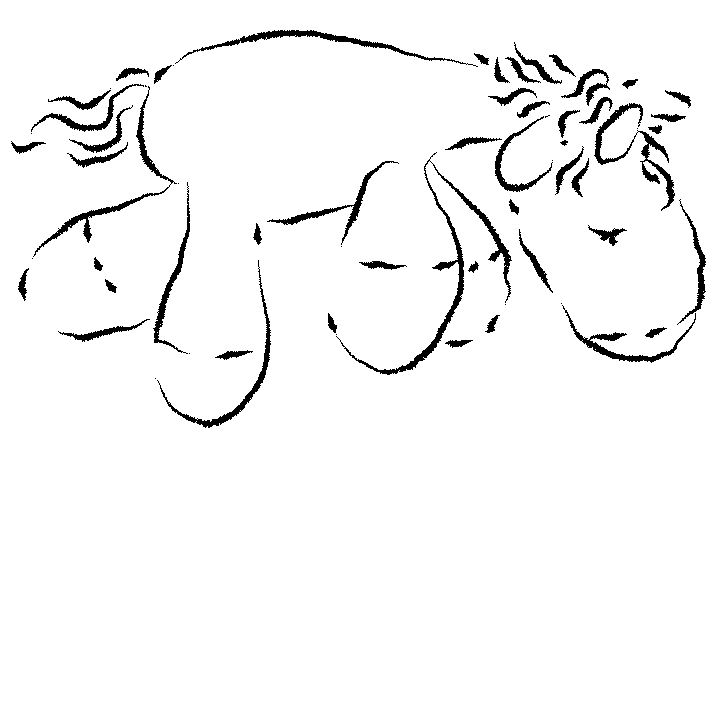

how many hours do you usually sleep?
I guess I go to sleep around 12, so it's like 7, 8 hours. 7, 8, 9 — between there.
If I have to wake up, it's 8. If I don't have to wake up, it's 10.
I don't really count it... I do wake up every day at 7 because that's how my body wakes me up. So it sucks if I go to sleep at like 12 because then I only sleep 7 hours. But if I go at my preferred time, which would be 10, then I sleep what, 9? That's cool for me.
Well, the average right now, let me see... it's in between 7 and 8 hours. Even though I usually like to sleep 10 hours because otherwise I'm moody and not happy.
I think on average I would say like 7 hours. It can be like 6, but it can also be like 9, so yeah.
I can actually check exactly. But I think usually it's about 7 to 8. If you give me a second, I will check it on my Samsung Health thing. Because I have a watch so it tracks my sleep and when I wake up... Okay, let's do 12 months. Yeah, so it's exactly 7 hours and 51 minutes.
Seven, I think..?
It depends on the school schedule. In the vacation, I slept like 8 hours, 7 hours. But when I'm going to school, I usually sleep like 5 hours.
do you have a specific time when you go to bed?
I always try to be in bed around 10. And then I watch a TV show, YouTube, whatever. But at least like not doing anything crazy after that.
Weekends are different. Well, yeah, most of the time Saturday is later, but Sunday then is earlier.
Well... It's usually around 11, or from 11 to 1 am. Also on the weekend.
I mean, it's not very specific, but I do go to bed between 10 and 12 most days. Unless it's like a party or something.
I would love to have a specific time when I go to bed, but right now I don't because I live in a hostel.
I think usually it's somewhere in between 9:30 and 10:30. I need a lot of sleep.
But right now it's more towards 10 until 11:30, that's my time. Too late if you ask me! I need at least 10 hours to be rested.
No, it's different every day.
Usually, I go around 11, from 11... no, not from 11, from 12 to 1 — usually in between that.
I mean, I wish it was earlier, but I feel like the day is too short to manage all my shit.
No... I try to keep to 11 during weekdays when I have to get up at 6, 6:30. I try to. It's about 50-50 if I succeed. But other than that, not really.
I made a schedule to sleep before 12. I made a schedule, but I usually sleep at 2 or 1.
what do you usually do before going to sleep?
I listen to a podcast, like 10 minutes of a podcast and then I fall asleep. At least that's what I've been doing for quite some time now. I actually put on a different podcast once and then I couldn't fall asleep because I hate the voices. But that's the funny thing. It's the most shitty podcast ever. They talk about rumours and the life in Los Angeles. It's the 'Cancelled' podcast by Tana Mongeau and Brooke Schofield. And they just talk about life, and cheating, and boyfriends, and how they're in a stable relationship now, and about the drug world of Los Angeles, or sometimes they have an interview or whatever. So it's like a comfort thing, it's about nothing. I listen to it for like 10 minutes before going to sleep. I put a timer on.
I take my pill because without a pill I cannot fall asleep. And I put my earplugs in, and I use a t-shirt or something to put over my eyes so I don't get waken up by the light. I think that's it. I mean, I just do regular things that you do before sleep like taking a shower and brushing your teeth and stuff.
There is a set up because I drink tea almost all the time when I'm at home. Then I have to finish my tea, brush my teeth and then go back. Then I put on a little show or something, and then fall asleep. If I can't fall asleep, then I fall asleep to the little show. And if I can fall asleep, then it's just a little episode or something, and then I sleep.
I can't have any routines, I don't know, every time I start trying to establish a routine for myself, I have a hard time sticking to that routine. So basically every night is different.
Well, if I fall asleep alone, without my girlfriend, I always listen to music because otherwise I need like half an hour to an hour to fall asleep, and with music I'm gone in like eight minutes max.
I always watch a series or like a film or something. Because if I don't, then I will think about too many things and I'm going to get excited about this or that. And it feels like without any distractions, I actually create my own distractions. And then I won't be able to get into this state of mind to actually relax and just sleep away.
I usually like to shower before I go to sleep. Because if I shower at 6, for example, for me it's like bedtime. I'm not doing anything after, no study, nothing. I do my skincare.
I mean, I have this bad habit of scrolling and answering messages at the evening. Because usually it's the only time when I'm not really doing anything. So I'm just laying in bed and answering whoever I did not answer that day. I do doom-scroll sometimes. I try to avoid it lately because I know I don't sleep well after. I sometimes watch series. That's it, I think, most of the things that I do.
I brush my teeth. That's something I always do before I go to sleep. Besides that, not really a standard routine. Sometimes I come home and I immediately brush my teeth and go to sleep. Other times I'm doing stuff on the computer.
I brush my teeth, I wash my face, I change my clothes. Oh, and I use this specific lavender aroma oil which makes me relaxed and makes me feel happy to be asleep. And I drink a cup of water.
do you ever struggle to fall asleep?
If I'm on my phone for too long or something, then I already know at the beginning of the evening that this is gonna fuck me up. I'm not gonna be able to fall asleep.
Yeah, yeah, all my life basically. All that I remember, I always had problems like... anxiety would just fucking go crazy, and I would just lay down there and make up imaginary scenarios of me fighting with someone or some crazy shit. And it took me like anywhere, I don't know, 2 to 3 hours to fall asleep. That was insane.
Oh my God, yeah! I remember this specific month when there were two instances — one really unhealthy, and the other one me being stupid, which was — I had a favourite tea, which I did not realise had an extreme amount of caffeine in it. And I drank it religiously up to 6 cups a day. And every night I struggled to fall asleep. And it progressed to me having to fall asleep every night at 2, 3 and not knowing why. And if I couldn't fall asleep, then I sometimes made myself tea, which made it fucking worse. Then I was talking to my friends and I told them about the tea I drink, and then I googled this tea and I was like, oh shit, I know what the problem is!
And then the unhealthy instance was — I got addicted to a game, fucking Baldur's Gate. And I played it instead of sleeping. And I fucked my sleep schedule so bad that I had to recover it for the past month.
Usually I don't struggle because if my girlfriend is there, I fall asleep pretty quickly. But one thing I really struggle with is falling asleep without natural light. I'm extremely influenced by light, the moon and the sun, and if there's pure darkness, like if the shades are closed or if there's just no windows, I will have the hardest fucking time to fall asleep and to wake up. I think the waking up part might even be worse because I'm solar-powered. If there's sun, I'm awake. Like in summer I tend to wake up at like 5 AM because of that and fully rested actually. But in winter, especially here in The Netherlands when there's only like 5 hours of sun a day, I feel like I need 14 hours of sleep. And then again in summer I only need like 6 hours of sleep a night. So basically my sleep schedule really changes with the seasons.
Yeah, if I don't watch something. Then, most of the time I watch something with my boyfriend, then I fall asleep, and then he takes care of turning off the lights and putting the laptop away or whatever. But now he's on an exchange, so I have to do it by myself. *laughing*
But it's funny because it's very easy for me to fall asleep during the day. I can just take a nap whenever. I can also sleep for like 2 hours or 15 minutes and I'm going to wake up very energised. But it's very different when it comes to actual time to go to sleep. Then it's a bit more difficult.
I notice that, for example, after I've either watched series or if I was on my phone for too long... Or sometimes even if I just think a lot and my brain is really busy, I cannot fall asleep. But I'd say it doesn't happen really often. But there are some patterns when it happens.
Not a lot. I would say maybe 10% of the time I would struggle. I think mostly it would be because I'm still wide awake and forcing myself to sleep at a reasonable time. That could be because I woke up too late that day. If I wake up at 11 or 12, I might have a hard time falling asleep at 10 or 11.
Yes, especially when I have lots of things to think about in my head.
is there anything that helps you to fall asleep?
I put on a podcast so that I don't get stuck in my own thoughts.
Or what I've also tried to do is just counting and then trying to not let your mind wander off. So trying to only visualise the numbers or something. And that's actually very difficult. Especially if you can't fall asleep and the whole thing is that your mind is wandering off. But that's what I tried to do.
I also had a time where I used to put on meditation. Once I did a 12 minute meditation to fall asleep, like a thing on YouTube. And it was like sea sounds so you could hear the waves coming in back and forth. I remember that worked really well once. I could really feel the waves. And then I actually fell asleep while the video was still going. So my computer died. Like 5, 6, 7 hours I was listening asleep to other meditation things. But that never helped the same way after that, actually. So it's mostly the comfort of that podcast, which I once decided that that was the thing to fall asleep to.
If I'm sleeping with someone, usually. Or sometimes that's not enough, but if they pat me on my back or, you know, kind of scratch a bit..? Then I can fall asleep for sure.
I think a very important thing for me to have a good sleeping schedule is also have a good eating schedule. So I do really try to eat at my hours, which is like around 9, 8 is when I eat breakfast. Then from 12 to 2 I eat lunch. And then dinner I eat latest, and that's like super fucking latest, at 8. And then I don't eat anymore. And that makes me fall asleep like a m***f*cking baby.
Listening to music. Or actually if I can't fall asleep, I always do this — if I'm laying in bed and it's already been half an hour, I stand up and I go drink water, do anything like just for a minute or two, and then go to bed again, and then I mostly fall asleep.
I don't like the fact that I'm watching stuff before going to bed because I think it also makes you agitated. But I used to read a lot before sleeping and this was one of the best things. Or I actually used to do some yoga. And I think these were the healthiest things. I feel like I got a better quality of sleep. It's interesting because I grew up in a Buddhist family and they always emphasise the fact that it's very important what you do before falling asleep because your brain is still going to process stuff or have thoughts while you're sleeping, but you don't have control on it. But these things still have impact, you know, like they plant little seeds for the future, or if you have negative thoughts, you'll have anxiety during your sleep. So the way to avoid that is to really be conscious and choose the state of mind that you're in before falling asleep. So if you're really peaceful and positive, then the 8 hours or 7 hours following should be driven by that.
I do these breath exercises when you don't do anything much. Basically, you just focus on how you're breathing. Because then you focus on it so much that you stop thinking about whatever you're thinking. And at one point it just turns you off.
Sometimes I get out of bed, go to the toilet again or drink some water. Or I just roll around in my bed and try different positions to feel more comfortable. And then sometimes, I know this is bad — watching stuff while trying to sleep — but I sometimes watch something low-key calm-ish and then fall asleep to that. And I always sleep with plushies. If I'm not sleeping with someone, then plushies are the things I cuddle with.
I usually listen to YouTube soundtrack, or like an interview, or any form of talking sounds to keep me focused on something else than my inner thoughts. I really can't stop thinking so listening to other people talking helps me to stop thinking and just fall asleep.
Oh, I think also the temperature is very important. If it's cold, I can't really get a nice sleep. And having a soft and warm blanket helps with that.
do you prefer sleeping with someone else or by yourself?
I just like both.
I don't really sleep with anyone. Maybe if it's like a partner. But even then I don't know about it. That might be the only thing that actually does wake me up at night. If I feel somebody touching me, I'm super fucking awake and like "what the fuck is happening?" and afraid sometimes. It's super fucking creepy. So I don't really fuck with it.
I don't really have a preference. I love sleeping with my girlfriend. I love having my space. I think it's a good balance having both sometimes. But generally sleeping with anyone in the same bed... I actually have a hard time falling asleep with people that I've never slept in the same bed with. But that can be generalised with saying I have a hard time sleeping in beds that I don't know, like the first nights are probably only 5 hours of sleep. But I don't really have a preference when it comes to my girlfriend or no one.
If it's like a friend or somebody that I'm dating or seeing that I'm not super close to, then I'm not going to have a deep, deep sleep. Because I'm constantly aware of the other person even when I'm sleeping. And now I've been with my boyfriend for 2 years and it's the best sleep because I know him very well and it feels very comforting. And I think I would rather sleep next to him than alone or with anybody else.
It depends on who it is. Let's say if it's a partner, I'm super fine with that! Because then I don't need the plushie unicorn, I just have them. *laughs* That's nice. I mean, in terms of my partner, I know that with him I fall asleep like that.. *snaps fingers* ..like, I don't remember when was the last time when I couldn't fall asleep. But the only thing which is uncomfortable is when you wake up at night because your neck is too stiff, or someone is killing your arm, or pulling your hair... But I don't know if I have a preference. Also the thing is, it's like a long distance relationship. So you kind of get used to sleeping alone. But when there is a moment when we can sleep together, then it's really nice. Of course, I enjoy it. I would never say no to sharing a bed with him.
But besides that, with other people, it really depends. Because I know, for example, with my sister when we travel, she sleeps like a fucking starfish! So I'm like "no, I'm not sleeping with you! With my whole love and respect, no". With friends, I don't mind that either, but for some reason I'm always the one who ends up on the edge of the bed. Because I don't move that much and I just kind of get pushed out. So yeah.. I think that's the thing which I kind of accepted in my life.
It does depend a little bit on who it is. I don't generally have a problem with sleeping in the same bed as someone else, like friends if we happen to stay over somewhere. I know some people I will cuddle with, others not.
I think falling asleep with someone else is easier. Also depends on the person. If I'm on cuddling terms with that person, then it's easier, otherwise it doesn't really matter compared to falling asleep alone. I feel more pressure to put away my phone though. So that helps, I guess.
do you have something that you can't sleep without?
or something you miss when you don't sleep at home?
I always have a really big stuffed animal, like one that's a bit too big actually. Now it's a big teddy bear from Ikea, Djungelskog.
I also know that I cannot fall asleep if I'm wearing a sweater. If the pillow is too high, I cannot fall asleep, or if I have socks on. Those three things I know that if I keep them on, I'm not going to fall asleep.
I have my attributes being earplugs and something to put on my eyes. I usually take them with me. If I don't take them, then I won't sleep properly, then I will sleep for like 3 hours maybe. And I always have to hug something so I usually have like one more pillow. If I don't have that, I'm like *gesturing with their hands* where am I putting all that?! *laughs*

I do have a plushie that is like destroyed and annihilated. Like most people's are, right? It's cute or something. I hug it. It's like, what is it called? It's a specific race of a dog, the Shiba Inu! It's like this.. *gestures with his hands* ..like an oval shape, not very dog-like. But yeah, it's nice to hug something when you fall asleep. I don't even need it specifically. When I don't have it, I just use my blanket.
I have this little pillow shaped like a cloud, and there's a little... it's not a general angel, it's like these angels that protect you? There's a specific term that I can't remember... I know the German word — Schutzengel... Guardian angel! Yeah, it's basically an illustration of a guardian angel and then on the right side there's a text, something like a Schutzboy..? It's blue! My dad bought it for me. And there were two options — there was a pink option which said girl and a blue option that said boy, and I didn't even ask my dad which one to get, but he got the blue one when I was like six! I take it everywhere. I don't really fall asleep without it, cause it fits my neck perfectly! And I'm extremely particular when it comes to pillows, and because I'm in between apartments, for the last month there was no pillow that I could sleep on. So this is the only thing that holds up my neck the perfect way. And it reminds me of home! Not just sentimental, but practical.
I always need to have a blanket, even if it's very hot in the summer, I need something. And I always need to hold something like a second pillow or whatever. Otherwise it feels uncomfortable.
I have this plushie unicorn. It's quite big, actually. Because I cannot fall asleep unless I'm hugging something. This has been going on since my childhood. I need to hug at least like a hoodie or something to fall asleep. So I do have this unicorn.
But when I travel, I have this kind of a pillowcase. It has a shape of a rectangle and it has a zipper. And it's meant to put clothes such as socks and underwear into it, so like a traveling bag. But it's made as a pillow. So you kind of fill it up and take it with you. I take that and then I usually sleep with that. Or I just grab a piece of clothes but then it should be something thicker, like a hoodie or a towel.

I try to always take a plushie with me if I know I'm gonna sleep away from home. I notice that sometimes I have problems falling asleep if I don't have someone or something to cuddle with. I don't know, in my head plushies do the trick, but not like a non-cutesy-formed pillow or something.
I have two Blåhaj's from Ikea, a big one and a small one that are pretty much always in my bed. And I have a tiger plushie that I got in kindergarten, so that's been with me for quite a while and I often have it in my bed too. And pretty recently I've been taking a small shark, not an Ikea shark, with me on trips because it's very small but still cuddly.
A blanket! Or something that can cover the whole of my body, so like I just want to be like a caterpillar when I go sleep, I really love the feeling of being wrapped.
what is your relationship with sleep like?
This week, not super good. I've made it a little bit too late in the weekend and then I started working right away, so I had to wake up early. So I feel like I'm catching up. Even though it's Thursday. But I know that probably tonight I'm going to go to sleep earlier. So then I'll be okay again.
They are f**king h*e, they are f**king b**ch, bro... *laughing* ...but, I mean, it's okay. Well, I have to do it so it's fine. I just wish it was easier for me, I wish I actually felt rested, and I wish I didn't grind my teeth in my sleep, and actually... You know, I'm mad at my body because, girl, you're supposed to be relaxing, why are you tensing your muscles? Be for real!
I am proud of it. I flex it often. I also have this fucking amazing ability... I think my sleep schedule was really shitty when I was a teenager. And then I started taking depression meds. I took them for like 2 years, I stopped and I never had to take them again. But they made my sleeping schedule the best it's ever fucking been. And they gave me a super fucking power of being able to fall asleep almost anywhere, almost instantly. I can fall asleep like no matter how loud it is, I can fall asleep. That is a fact of life. And I'm very happy about this. Thank you, depression meds!
I love sleep! So my relationship is loving!
I think I went through a lot of different phases in my life. When I was 15, I started having the same recurring nightmare. And then one night I was again in that narrative with a person that wanted to kill me, and I looked at them and I was like, wait, I'm in a dream, just kill me, you know. And the guy was super surprised. At this point I think my brain understood something. And then for one year I was actually having lucid dreams like every day. So I was super excited to go to bed because I would wake up somewhere and I could do literally anything I wanted because I knew that there were no consequences. I think that was really, really nice and it happened very naturally.
I feel like now I don't have this feeling anymore of like, when you finally go to bed and you think — ah, it's so comfy, finally! I don't have that. I don't really feel like it's giving me anything nice lately to be in bed, or to fall asleep, or to wake up. It just feels like I have to do it. But because it doesn't give me any pleasure, I would rather not. And if I could just go without sleeping, then I would do it.
I love sleeping. I. Love. Sleeping. Bro, this is like, put it on my CV! We were talking with my housemates the other day about seven dwarfs and the Snow White, because it's seven of us in the house. And we were assigning each dwarf to a person. And then the girlies told me — you know what, you're Sleepy!
I love, I love sleeping. And I love, you know, when you have that good sleep and you wake up and you're like, oh my god, this was amazing! I hate, I hate when I have to wake up too early and then I feel like shit. I hate it. But I love the feeling of when you wake up and you know that the sleep was perfect. I'm like, yes, yes, yes, please, more!
Love-hate relationship. *laughing* I like sleep. I like sleeping in sometimes. But I also dislike the idea of wasting time on sleep. I really feel like I have too many things I want to do in a day.
Like with my mom... Like, I know it's really really important and something that's really like a core of my life, but I usually overrate it and can't spend much time with that.
you're still awake?
try this playlist